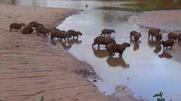

The Capybara
The capybara (Hydrochoerus hydrochaeris) is the largest rodent in the world. These fascinating creatures are native to South America, particularly found in regions with water bodies such as rivers, swamps, and wetlands. Capybaras are well-adapted to aquatic environments and are excellent swimmers.

Capybaras have a stocky and stout body with short legs and webbed feet, making them perfectly suited for a semi-aquatic lifestyle. They have a brownish-gray fur coat and eyes positioned on the top of their head, which allows them to see while mostly submerged in water.
Capybaras are highly social animals and live in groups called herds. These herds can consist of 10 to 20 individuals and sometimes even more. They are known for their friendly and peaceful nature and are often seen resting together in large groups.
Capybaras are herbivores and primarily feed on aquatic plants, grasses, and fruits. Their unique digestive system allows them to efficiently process fibrous plant material and extract nutrients from their diet.
Due to their amiable behavior and gentle temperament, capybaras are popular animals in zoos and captive settings, where visitors can observe and interact with them up close.
Conservation efforts are in place to protect capybara populations and their habitats, ensuring the long-term survival of these charming creatures in the wild.